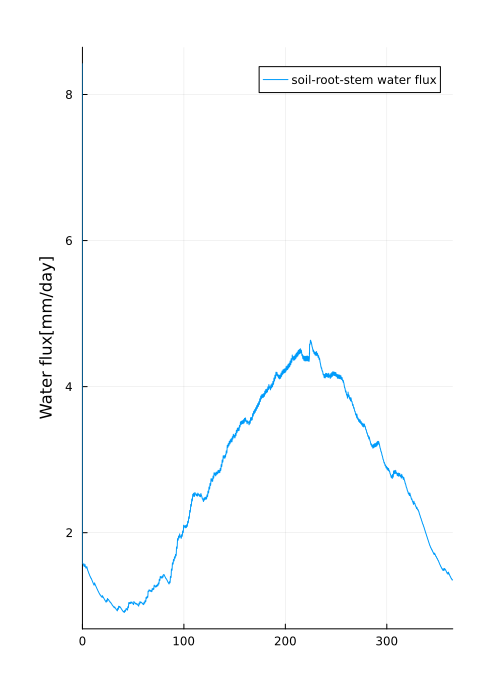

Coupling the CliMA Canopy and Soil Hydraulics Models
In the previous tutorial, we demonstrated how to run the canopy model in standalone mode using prescribed values for the inputs of soil hydraulics into the canopy hydraulics model. However, ClimaLSM has the built-in capacity to couple the canopy model with a soil physics model and timestep the two simulations together to model a canopy-soil hydrology system. This tutorial demonstrates how to setup and run a coupled hydrology simulation, again using initial conditions, atmospheric and radiative flux conditions, and canopy properties observed at the US-MOz flux tower, a flux tower located within an oak-hickory forest in Ozark, Missouri, USA. See Wang et al. 2021 for details on the site and parameters.
In ClimaLSM, the coupling of the canopy and Richard's models is done by pairing the root extraction of the canopy hydraulics model, which acts as a boundary flux for the plant system, with a source term for root extraction in the Richard's model, so that the flux of water from the soil into the roots is equal and factored into both models. This pairing is done automatically in the constructor for a SoilPlantHydrologyModel so that a user needs only specify the necessary arguments for each of the component models, and the two models will automatically be paired into a coupled hydrology model.
Preliminary Setup
Load External Packages:
import OrdinaryDiffEq as ODE
using Plots
using Statistics
using Dates
using InsolationLoad CliMA Packages and ClimaLSM Modules:
using ClimaCore
import CLIMAParameters as CP
import ClimaTimeSteppers as CTS
using ClimaLSM
using ClimaLSM.Domains: LSMSingleColumnDomain
using ClimaLSM.Soil
using ClimaLSM.Canopy
using ClimaLSM.Canopy.PlantHydraulics
import ClimaLSM
import ClimaLSM.Parameters as LSMP
include(joinpath(pkgdir(ClimaLSM), "parameters", "create_parameters.jl"));Define the floating point precision desired (64 or 32 bit), and get the parameter set holding constants used across CliMA Models:
const FT = Float64;
earth_param_set = create_lsm_parameters(FT);Setup the Coupled Canopy and Soil Physics Model
We want to simulate the canopy-soil system together, so the model type SoilPlantHydrologyModel is chosen. From the linked documentation, we see that we need to provide the soil model type and arguments as well as the canopy model component types, component arguments, and the canopy model arguments, so we first need to initialize all of these.
Setup the domain for the model:
nelements = 10
zmin = FT(-2)
zmax = FT(0)
land_domain =
LSMSingleColumnDomain(; zlim = (zmin, zmax), nelements = nelements);For our soil model, we will choose a RichardsModel and set up all the necessary arguments. See the tutorial on Richard's Model for a more detailed explanation of the soil model.
soil_ν = FT(0.55)
soil_K_sat = FT(4e-7)
soil_S_s = FT(1e-3)
soil_vg_n = FT(2.6257)
soil_vg_α = FT(1.368)
θ_r = FT(0.067)
soil_domain = land_domain.subsurface
soil_ps = Soil.RichardsParameters{FT, vanGenuchten{FT}}(
soil_ν,
vanGenuchten(; α = soil_vg_α, n = soil_vg_n),
soil_K_sat,
soil_S_s,
θ_r,
)
soil_args = (domain = soil_domain, parameters = soil_ps)
soil_model_type = Soil.RichardsModel{FT};Next we need to set up the CanopyModel. For more details on the specifics of this model see the previous tutorial.
Begin by declaring the component types of the canopy model. Unlike in the previous tutorial, collect the arguments to each component into tuples and do not instantiate the component models yet. The constructor for the SoilPlantHydrologyModel will use these arguments and internally instatiate the component CanopyModel and RichardsModel instances. This is done so that the constructor may enforce consistency constraints between the two models, and this must be done internally from the constructor.
canopy_component_types = (;
radiative_transfer = Canopy.BeerLambertModel{FT},
photosynthesis = Canopy.FarquharModel{FT},
conductance = Canopy.MedlynConductanceModel{FT},
hydraulics = Canopy.PlantHydraulicsModel{FT},
);Then provide arguments to the canopy radiative transfer, stomatal conductance, and photosynthesis models as was done in the previous tutorial.
radiative_transfer_args = (;
parameters = BeerLambertParameters{FT}(;
Ω = FT(0.69),
ld = FT(0.5),
ρ_leaf = FT(0.1),
λ_γ = FT(5e-7),
)
)
conductance_args = (;
parameters = MedlynConductanceParameters{FT}(;
g1 = FT(141),
Drel = FT(1.6),
g0 = FT(1e-4),
)
)
photosynthesis_args = (;
parameters = FarquharParameters{FT}(
Canopy.C3();
oi = FT(0.209),
ϕ = FT(0.6),
θj = FT(0.9),
f = FT(0.015),
sc = FT(5e-6),
pc = FT(-2e5),
Vcmax25 = FT(5e-5),
Γstar25 = FT(4.275e-5),
Kc25 = FT(4.049e-4),
Ko25 = FT(0.2874),
To = FT(298.15),
ΔHkc = FT(79430),
ΔHko = FT(36380),
ΔHVcmax = FT(58520),
ΔHΓstar = FT(37830),
ΔHJmax = FT(43540),
ΔHRd = FT(46390),
)
);For the plant hydraulics model, we now will not provide prescribed root extraction since the soil pressure will now be simulated by the soil physics model.
f_root_to_shoot = FT(3.5)
SAI = FT(0.00242)
LAI = FT(4.2)
K_sat_plant = 1.8e-8
RAI = (SAI + LAI) * f_root_to_shoot
area_index = (root = RAI, stem = SAI, leaf = LAI)
function root_distribution(z::T; rooting_depth = FT(1.0)) where {T}
return T(1.0 / rooting_depth) * exp(z / T(rooting_depth)) # 1/m
end
ψ63 = FT(-4 / 0.0098)
Weibull_param = FT(4)
a = FT(0.05 * 0.0098)
conductivity_model =
PlantHydraulics.Weibull{FT}(K_sat_plant, ψ63, Weibull_param)
retention_model = PlantHydraulics.LinearRetentionCurve{FT}(a)
plant_ν = FT(0.7)
plant_S_s = FT(1e-2 * 0.0098)
plant_hydraulics_ps = PlantHydraulics.PlantHydraulicsParameters(;
area_index = area_index,
ν = plant_ν,
S_s = plant_S_s,
root_distribution = root_distribution,
conductivity_model = conductivity_model,
retention_model = retention_model,
)
n_stem = Int64(1)
n_leaf = Int64(1)
h_stem = FT(9)
h_leaf = FT(9.5)
compartment_midpoints = [h_stem / 2, h_stem + h_leaf / 2]
compartment_surfaces = [zmax, h_stem, h_stem + h_leaf]
plant_hydraulics_args = (
parameters = plant_hydraulics_ps,
n_stem = n_stem,
n_leaf = n_leaf,
compartment_midpoints = compartment_midpoints,
compartment_surfaces = compartment_surfaces,
);We may now collect all of the canopy component argument tuples into one arguments tuple for the canopy component models.
canopy_component_args = (;
radiative_transfer = radiative_transfer_args,
photosynthesis = photosynthesis_args,
conductance = conductance_args,
hydraulics = plant_hydraulics_args,
);We also need to provide the shared parameter struct to the canopy as usual and specify the domain for the canopy.
z0_m = FT(2)
z0_b = FT(0.2)
shared_params = SharedCanopyParameters{FT, typeof(earth_param_set)}(
LAI,
h_stem + h_leaf,
z0_m,
z0_b,
earth_param_set,
)
canopy_model_args = (; parameters = shared_params, domain = land_domain.surface);- We will be using prescribed atmospheric and radiative drivers from the US-MOz tower, which we read in here. We are using prescribed atmospheric and radiative flux conditions, but it is also possible to couple the simulation with atmospheric and radiative flux models.
include(
joinpath(
pkgdir(ClimaLSM),
"experiments/integrated/ozark/ozark_met_drivers_FLUXNET.jl",
),
);We may now instantiate the integrated plant hydraulics and soil model. The Default diagnostics is transpiration. Here we will work with prescribed atmospheric and radiative flux conditions from the observations at the Ozark site as was done in the previous tutorial.
land_input = (
transpiration = DiagnosticTranspiration{Float64}(),
atmos = atmos,
radiation = radiation,
)
land = SoilPlantHydrologyModel{FT}(;
land_args = land_input,
soil_model_type = soil_model_type,
soil_args = soil_args,
canopy_component_types = canopy_component_types,
canopy_component_args = canopy_component_args,
canopy_model_args = canopy_model_args,
);Now we can initialize the state vectors and model coordinates, and initialize the explicit/implicit tendencies as usual. The Richard's equation time stepping is done implicitly, while the canopy model may be explicitly stepped, so we use an IMEX (implicit-explicit) scheme for the combined model.
Y, p, coords = initialize(land)
exp_tendency! = make_exp_tendency(land)
imp_tendency! = make_imp_tendency(land);We need to provide initial conditions for the soil and canopy hydraulics models:
Y.soil.ϑ_l = FT(0.4)
ψ_stem_0 = FT(-1e5 / 9800)
ψ_leaf_0 = FT(-2e5 / 9800)
S_l_ini =
inverse_water_retention_curve.(
retention_model,
[ψ_stem_0, ψ_leaf_0],
plant_ν,
plant_S_s,
)
for i in 1:2
Y.canopy.hydraulics.ϑ_l[i] .=
augmented_liquid_fraction.(plant_ν, S_l_ini[i])
end;Now initialize the auxiliary variables for the combined soil and plant model.
t0 = FT(0)
update_aux! = make_update_aux(land)
update_aux!(p, Y, t0);Select the timestepper and solvers needed for the specific problem, and setup the jacobian for the soil model. For more details on the soil jacobian setup see the tutorial on using a Richard's Model. Specify the time range and dt value over which to perform the simulation.
update_jacobian! = make_update_jacobian(land.soil)
N_days = 365
tf = t0 + FT(3600 * 24 * N_days)
dt = FT(225)
n = 16
saveat = Array(t0:(n * dt):tf)
timestepper = CTS.ARS222()
norm_condition = CTS.MaximumError(FT(1e-8))
conv_checker = CTS.ConvergenceChecker(; norm_condition)
max_iterations = 20
ode_algo = CTS.IMEXAlgorithm(
timestepper,
CTS.NewtonsMethod(
max_iters = max_iterations,
update_j = CTS.UpdateEvery(CTS.NewNewtonIteration),
convergence_checker = conv_checker,
),
)
W = RichardsTridiagonalW(Y)
jac_kwargs = (; jac_prototype = W, Wfact = update_jacobian!);And now perform the simulation as always.
sv = (;
t = Array{FT}(undef, length(saveat)),
saveval = Array{ClimaCore.Fields.FieldVector}(undef, length(saveat)),
)
cb = ClimaLSM.NonInterpSavingCallback(sv, saveat)
prob = ODE.ODEProblem(
CTS.ClimaODEFunction(
T_exp! = exp_tendency!,
T_imp! = ODE.ODEFunction(imp_tendency!; jac_kwargs...),
dss! = ClimaLSM.dss!,
),
Y,
(t0, tf),
p,
)
sol = ODE.solve(
prob,
ode_algo;
dt = dt,
callback = cb,
adaptive = false,
saveat = saveat,
);Plotting
Now that we have both a soil and canopy model incorporated together, we will show how to plot some model data demonstrating the time series produced from each of these models. As before, we may plot the GPP of the system as well as transpiration showing fluxes in the canopy.
daily = sol.t ./ 3600 ./ 24
model_GPP = [
parent(sv.saveval[k].canopy.photosynthesis.GPP)[1] for
k in 1:length(sv.saveval)
]
plt1 = Plots.plot(size = (600, 700));
Plots.plot!(
plt1,
daily,
model_GPP .* 1e6,
label = "Model",
xlim = [minimum(daily), maximum(daily)],
xlabel = "days",
ylabel = "GPP [μmol/mol]",
);Transpiration plot:
T = [
parent(sv.saveval[k].canopy.conductance.transpiration)[1] for
k in 1:length(sv.saveval)
]
T = T .* (1e3 * 24 * 3600)
plt2 = Plots.plot(size = (500, 700));
Plots.plot!(
plt2,
daily,
T,
label = "Model",
xlim = [minimum(daily), maximum(daily)],
xlabel = "days",
ylabel = "Vapor Flux [mm/day]",
);Show the two plots together:
Plots.plot(plt1, plt2, layout = (2, 1));Save the output:
savefig("ozark_canopy_flux_test.png");
Now, we will plot the augmented volumetric liquid water fraction at different depths in the soil over the course of the simulation.
plt1 = Plots.plot(size = (500, 700));
ϑ_l_10 = [parent(sol.u[k].soil.ϑ_l)[end] for k in 1:1:length(sol.t)]
plt1 = Plots.plot(
daily,
ϑ_l_10,
label = "10 cm",
xlabel = "Days",
ylabel = "SWC [m/m]",
xlim = [minimum(daily), maximum(daily)],
size = (500, 700),
margins = 10Plots.mm,
color = "blue",
);
plot!(
plt1,
daily,
[parent(sol.u[k].soil.ϑ_l)[end - 1] for k in 1:1:length(sol.t)],
label = "20cm",
color = "red",
);
plot!(
plt1,
daily,
[parent(sol.u[k].soil.ϑ_l)[end - 2] for k in 1:1:length(sol.t)],
label = "30cm",
color = "purple",
);Save the output:
savefig("ozark_soil_test.png");
And now to demonstrate the coupling of the soil and canopy models we will plot the water fluxes from the soil up into the plant hydraulic system:
root_stem_flux = [
sum(sv.saveval[k].root_extraction) .* (1e3 * 3600 * 24) for
k in 1:length(sol.t)
]
plt1 = Plots.plot(
daily,
root_stem_flux,
label = "soil-root-stem water flux",
ylabel = "Water flux[mm/day]",
xlim = [minimum(daily), maximum(daily)],
size = (500, 700),
margins = 10Plots.mm,
);And save the output
savefig("ozark_soil_plant_flux.png");
This page was generated using Literate.jl.